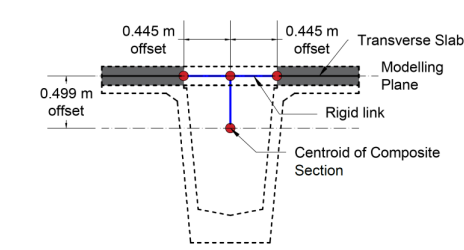
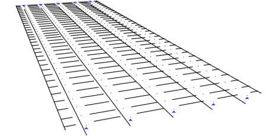
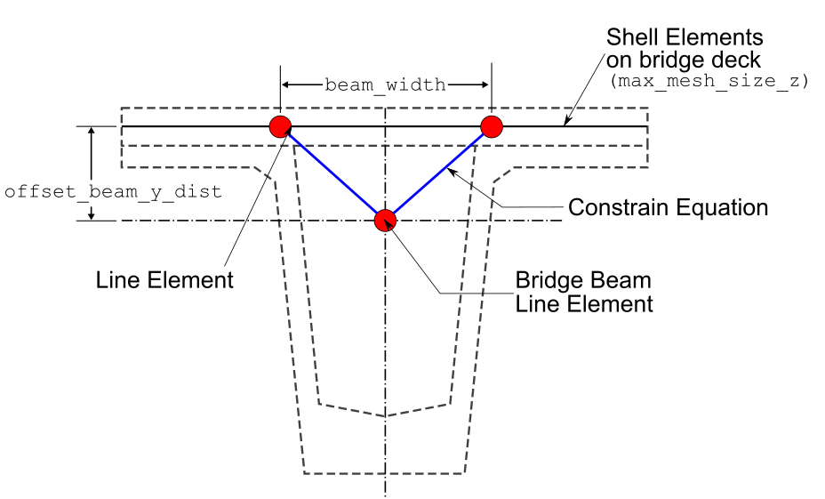

Model types available#
Which model type should I use?#
The table below summarises the three available model types and the situations each is best suited to. All three are created through create_grillage(); only the model_type keyword (and a few type-specific keyword arguments) differ.
Model type |
|
Best suited for |
Additional inputs required |
|---|---|---|---|
Beam only |
(default) |
Routine bridge deck grillage analysis; fastest to set up and run; well understood by practitioners. |
None beyond the standard arguments. |
Beam with rigid links |
|
Composite sections where the neutral axes of longitudinal and transverse members are offset from the grillage plane (e.g. Super-T girders). |
|
Shell & Beam |
|
Studies where two-dimensional slab behaviour is important (punching, local bending); highest fidelity but most computationally expensive. |
|
Rule of thumb: start with Beam only to verify boundary conditions and loading, then switch to Beam with rigid links or Shell & Beam once the global model is validated.
For the example code on this page, ospgrillage is imported as og
import ospgrillage as og
Beam Elements Only — beam_only#
This is the traditional modelling approach that is comprised of beam elements lay out in a grid pattern, with:
longitudinal members representing composite sections along longitudinal direction (e.g. main beams);
transverse members representing slabs or secondary beam sections.
This is the default model type when the model_type keyword argument is not specified in create_grillage().
example_bridge = og.create_grillage(bridge_name="Super T grillage", long_dim=10, width=7, skew=-42,
num_long_grid=7, num_trans_grid=5, edge_beam_dist=1, mesh_type="Ortho")
More information of this model type can be found here.
Beam with Rigid Links — beam_link#
This is a modified version of the traditional beam element model with the following features:
Offsets (in x-z plane) for start and end nodes along direction of transverse members - using joint offset.
Offsets (in vertical y direction) for start and end nodes of longitudinal members - again using joint offsets.
Figure 2 shows the details of the aforementioned model type. Figure 3 shows the model type created in a similar commercial software SPACEGASS.


To create this model, set model_type="beam_link" in create_grillage().
example_bridge = og.create_grillage(bridge_name="Modified bridge grillage", long_dim=10, width=7, skew=-12,
num_long_grid=7, num_trans_grid=5, edge_beam_dist=1, mesh_type="Ortho",
model_type="beam_link",
beam_width=1, web_thick=0.02, centroid_dist_y=0.499)
The joint offsets are rigid links. Information can be found in OpenSeesPy’s geomtransf
Table 1 outlines the specific variables for the beam link model.
Keyword argument |
Description |
|---|---|
|
Width of the beam/longitudinal members — used to define the offset distance in the z direction. |
|
Thickness of web — used to define the offset distance in the z direction. |
|
Distance in the y direction to offset longitudinal members (exterior and interior main beams). |
Table 1: Input arguments for the beam link model.
Note
The beam-link model applies offsets through OpenSees geometric-transform
joint offsets — the eccentricity is internal to the element stiffness
formulation, not a separate set of nodes. Because the nodes remain on the
mesh plane, og.plot_model() correctly draws them at their nodal
positions (i.e. the model appears flat).
For the shell-beam model, offset beam nodes are created at physically
shifted coordinates and connected to the shell plane by rigid-link
constraints. These links are visible in the Plotly 3-D backend
(backend="plotly") and can be toggled with show_rigid_links=False.
Shell & Beam Elements — shell_beam#
This is a more refined model using two element types — shell and beam elements — with the following features:
Shell elements lay in grids to represent bridge decks.
Beam elements modelled with an offset to the plane of shell elements to represent longitudinal beam sections.
Beam elements linked to shell elements at two corresponding locations using constraint equations —
OpenSeesPy’s rigidLink command.
This model has advantages in modelling slabs using shell elements which are well-suited to represent two-dimensional slab behaviour. Figure 4 shows the details and variables of the shell beam hybrid model.

When model_type="shell_beam" is selected, ospgrillage automatically determines the position of shell elements within the grillage plane. Users only need to define and assign the section of the shell element via create_section() and set_shell_members() respectively. The following example shows the steps to create the shell model type:
# create section of shell element
slab_shell_section = og.create_section(h=0.2) # h = thickness
# shell elements for slab
slab_shell = og.create_member(section=slab_shell_section, material=concrete)
# create grillage with shell model type
example_bridge = og.create_grillage(bridge_name="Shell grillage", long_dim=10, width=7, skew=0,
num_long_grid=6, num_trans_grid=11, edge_beam_dist=1, mesh_type="Orth",
model_type="shell_beam", max_mesh_size_z=0.5, offset_beam_y_dist=0.499,
beam_width=0.89)
# set shell members to shell elements
example_bridge.set_shell_members(slab_shell)
Table 2 outlines the specific variables for the shell hybrid model.
Keyword argument |
Description |
|---|---|
|
Max mesh size in the z direction. ospgrillage automatically determines the mesh size based on this value and the spacing of link nodes. |
|
Distance between offset beams and the grillage shell plane. |
|
Width between link nodes (left and right links to offset beam elements) in the global z direction. |
Table 2: Input arguments for the shell hybrid model.